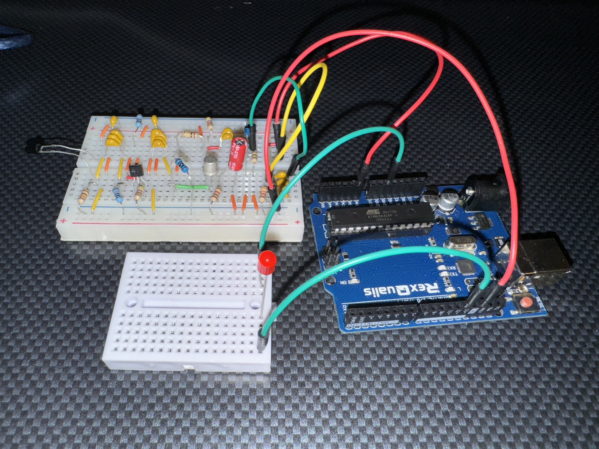
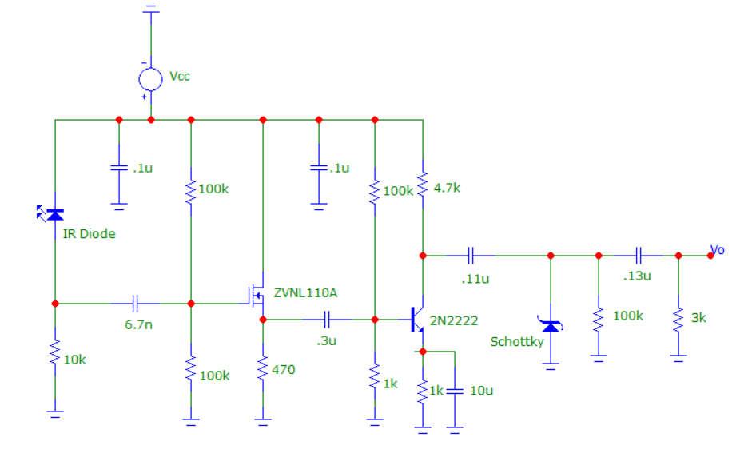

Lab 2 - Infrared Reciever

Engineers often grapple with the challenge of noisy sensors. Lab 2 addressed nosiy sensor issues, this lab was dedicated to designing and constructing an "electric eye" light beam-interrupter safety system. This system, featuring a transmitter projecting a light beam onto a receiver, activates a warning LED when the beam is obstructed by an object, a concept commonly seen in garage door safety and light curtain systems.

The circuit that Alex's group ended up designing was partially based off of the circuit design from the IR Term Project from ECE:3410 Electronic Cicuits. His group had to calculate resistor and capacitor values to accomodate the change in transmission frequency, and add in a high pass filter that would help eliminate the frequency put off from a 100W fluorescent light. To increase the range of the transmitter, the voltage amplifier was increased and the group was easily able to acquire the desired reciever range.